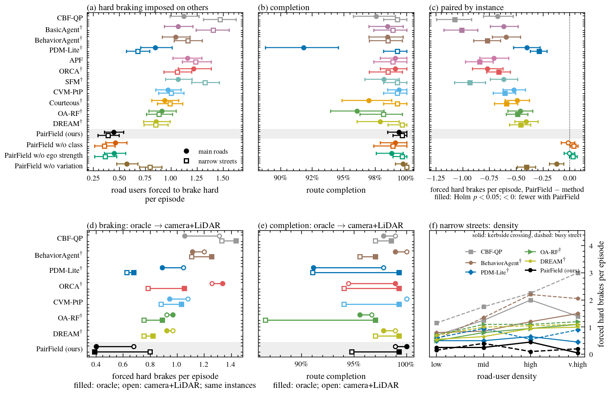
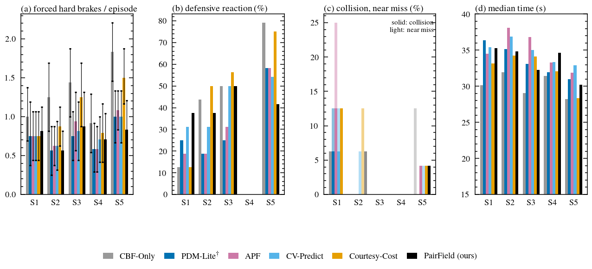
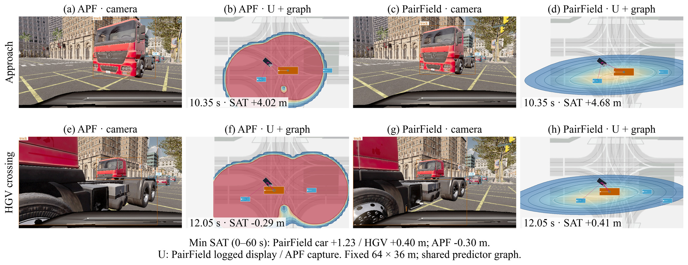
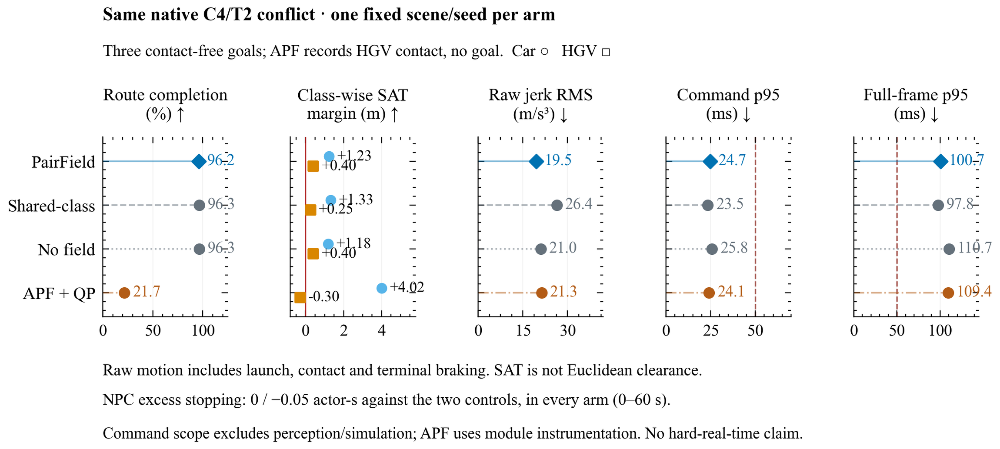
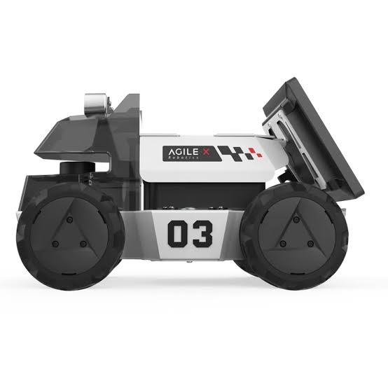

CBF-QP
8 forced hard brakesGoal at 37.2 s.
Mapless navigation · heterogeneous road users · conflict potentials
Precedence-Aware Conflict Potentials
for Mapless Navigation among Heterogeneous Road Users
A sparse precedence graph estimates who passes each conflict first. A conflict potential with temporal commitment then sets the ego's speed behind an unchanged safety filter, reducing the hard braking imposed on pedestrians, cyclists and drivers.
PAIRFIELD treats precedence, i.e. which road user passes a conflict point first, as an explicit and calibrated variable on a sparse conflict graph. The graph is learned from 2,432 recorded crossing conflicts in German and Chinese drone datasets. In those recordings, vehicles that pass first make vulnerable road users brake hard in 14.0% of conflicts; in the reverse direction the figure is 1.0%.
The planner selects a speed along a coarse reference path, without an HD map. It minimises a conflict potential made of three terms: precedence uncertainty, the discomfort its choice imposes on others, and its own braking. Total-variation and decrease terms make it commit to a precedence decision instead of hesitating. An unchanged barrier filter keeps safety separate from the social model. In closed-loop CARLA, the method is compared under one contract with ten cited planners, including CARLA's own agents. Evaluation covers ground-truth perception with occlusion, onboard camera and LiDAR, and safety-critical events. The same code runs on a LIMO robot.
CARLA statistics are paired by instance with Holm-corrected Wilcoxon tests; a forced hard brake is braking at least twice a road user's own class reference, caused by the ego, and not after the ego has passed. Compared methods and citations.
Closed-loop CARLA
Pose replays of logged episodes: a top-down render with the interaction graph and the conflict potential, the front camera, a chase camera and the roof LiDAR.
Method
Interaction risk depends on who approaches, in which direction and along which future path. PAIRFIELD represents these distinctions through ordered receiver/source classes and body-aligned anisotropy. Its gradient supplies pairwise social cues and directed edge salience; future positions supply an anticipatory cue. Coordinate-frame choices and forecast backends are declared with each experimental configuration.
Road execution projects interaction cues onto the assigned route and regulates target speed within that route. A CBF-QP filters the shaped reference before tracking.

Controlled evaluation
Planar simulation separates passing geometry, anticipation and wait/recommit control under known agent states.
One method family, two forecast configurations: PAIRFIELD (linear forecast) uses constant-velocity extrapolation; PAIRFIELD (graph forecast) uses the learned interaction graph. The primary planar suite uses linear forecasts. CARLA's source-body experiments use the learned graph predictor.
Performance varies by layout. The tests below separate class-conditioned passing geometry from the wait/recommit controller's constrained-passage behavior; complete baseline and ablation results remain expandable.
| Controller / configuration | Contact-free success | Collision [95% CI] ↓ | Travel-time premium (%) ↓ |
|---|---|---|---|
| Vis-CBF | 0.79 | 0.213 [0.15, 0.29] | 91.5 |
| HEIGHT-style adapter | 0.89 | 0.113 [0.07, 0.18] | 45.2 |
| AttnGraph-style adapter | 0.98 | 0.020 [0.00, 0.06] | 21.4 |
| Shared potentials (linear forecast) | 0.91 | 0.093 [0.05, 0.15] | 30.6 |
| PAIRFIELD (graph forecast) | 0.83 | 0.167 [0.11, 0.24] | 31.5 |
| PAIRFIELD (linear forecast) | 0.89 | 0.113 [0.07, 0.18] | 30.2 |
PAIRFIELD reduces collision from 0.213 to 0.113 relative to Vis-CBF, with reported Holm-adjusted paired McNemar p = 0.040. Shared potentials have a lower collision point estimate; AttnGraph-style also has lower collision and travel-time premium. Travel-time premium is 100(Tvr/L − 1)%, with traversal time T, reference speed vr and reference length L.
| Controller | Episodes with contact | Reported outcome |
|---|---|---|
| Safe-VF | 30 / 30 | Contact in every trial |
| Geo+S+QP | 30 / 30 | Contact in every trial |
| AttnGraph-style adapter | 30 / 30 | Contact in every trial |
| HEIGHT-style adapter | 0 / 30 | One timeout |
| PAIRFIELD (linear forecast) | 0 / 30 | 30 contact-free completions |
The ranking changes in the bottleneck. PAIRFIELD's wait/recommit stack completes all 30 trials, with a median 7.86 s below the deadlock-speed threshold before passing. This result identifies the constrained geometry where its execution strategy helps.
| Class contrast | Deployed geometry | Matched geometry |
|---|---|---|
| Truck–pedestrian | 0.244 / 0.140 | 0.086 / 0.000 |
| Car–pedestrian | 0.132 / 0.050 | 0.087 / 0.000 |
| Car–bicycle | 0.140 / 0.043 | 0.086 / 0.000 |
Positive offsets point away from the first-listed class. Mirrored scenes and longitudinal jitters control orientation. Equalizing radii and nonlearned class-dependent forces leaves an 8.6–8.7 cm passing offset induced by the learned parameter tables. Each geometry condition has three Holm-adjusted Wilcoxon contrasts, all reported p < 0.001. The primary suite is 79% pedestrian and contains no trucks; this controlled test isolates passing direction.
The speed governor gives the largest isolated collision reduction from Geo+S+QP (0.527 to 0.193); the complete linear-forecast stack reaches 0.113. Graph forecasts and shared potentials retain their own measured results in the complete comparison below.
| Controller / configuration | Success | Contact-free success | Collision [95% CI] | Time premium (%) | Min. clearance (m) | Proximity (s) | Adjusted p |
|---|---|---|---|---|---|---|---|
| Goal | 0.80 | 0.00 | 0.800 [0.73, 0.86] | 28.2 | -0.275 | 2.60 | 8e-26 |
| CBF | 1.00 | 0.43 | 0.567 [0.48, 0.65] | 35.7 | -0.049 | 3.30 | — |
| Geo+QP | 1.00 | 0.52 | 0.480 [0.40, 0.56] | 16.5 | 0.004 | 3.25 | — |
| Geo+S_a | 1.00 | 0.49 | 0.507 [0.42, 0.59] | 15.8 | -0.014 | 3.35 | — |
| Geo+S | 1.00 | 0.42 | 0.580 [0.50, 0.66] | 18.4 | -0.097 | 3.70 | — |
| Geo+S+QP | 1.00 | 0.47 | 0.527 [0.44, 0.61] | 19.2 | -0.018 | 3.32 | — |
| Geo+P+QP | 1.00 | 0.87 | 0.133 [0.08, 0.20] | 29.7 | 0.195 | 1.83 | — |
| Shared potentials (linear forecast) | 1.00 | 0.91 | 0.093 [0.05, 0.15] | 30.6 | 0.211 | 2.00 | — |
| PAIRFIELD (graph forecast) | 1.00 | 0.83 | 0.167 [0.11, 0.24] | 31.5 | 0.179 | 2.25 | — |
| Safe-VF | 1.00 | 0.37 | 0.627 [0.54, 0.70] | 14.7 | -0.028 | 3.12 | — |
| APF | 1.00 | 0.63 | 0.373 [0.30, 0.46] | 44.0 | 0.096 | 1.85 | 3e-7 |
| ORCA | 0.92 | 0.07 | 0.847 [0.78, 0.90] | 53.2 | -0.060 | 5.47 | 2e-28 |
| SFM | 0.78 | 0.15 | 0.813 [0.74, 0.87] | 61.6 | -0.144 | 2.60 | 9e-29 |
| Vis-CBF | 1.00 | 0.79 | 0.213 [0.15, 0.29] | 91.5 | 0.116 | 4.20 | 0.04 |
| Adapt-CBF | 1.00 | 0.41 | 0.587 [0.50, 0.67] | 43.1 | -0.079 | 2.75 | — |
| HEIGHT-style adapter | 1.00 | 0.89 | 0.113 [0.07, 0.18] | 45.2 | 0.333 | 0.60 | — |
| AttnGraph-style adapter | 1.00 | 0.98 | 0.020 [0.00, 0.06] | 21.4 | 0.351 | 1.15 | — |
| PAIRFIELD (linear forecast) | 1.00 | 0.89 | 0.113 [0.07, 0.18] | 30.2 | 0.195 | 2.15 | — |
| PAIRFIELD (linear forecast; tuned) | 1.00 | 0.87 | 0.127 [0.08, 0.19] | 38.2 | 0.181 | 2.30 | — |
Collision intervals are descriptive exact 95% intervals. Adjusted p values cover five prespecified McNemar comparisons with PAIRFIELD (linear forecast). HEIGHT-style and AttnGraph-style are adapters. The reported shared-potentials comparison has unadjusted p = 0.607. Complete values, component tests and definitions.
| Controller | Nominal density | 40 agents |
|---|---|---|
| Geo+S+QP | 2.22 / 5.37 | 2.05 / 6.04 |
| AttnGraph-style adapter | 2.94 / 5.67 | 6.37 / 12.64 |
| PAIRFIELD (graph forecast) | 5.04 / 11.14 | — |
| PAIRFIELD (linear forecast) | 5.54 / 11.93 | 16.65 / 24.71 |
Timing covers nominal command construction and CBF-QP, excluding simulation and metric bookkeeping. The observed PAIRFIELD linear-forecast 95th percentile is below the 50 ms budget at both reported densities. The density stress sweep separately increases collision from 0.10 at five agents to 0.85 at thirty.
The post-QP contact guard activates in 26% of primary PAIRFIELD runs and 0.40% of control cycles, with mean / maximum activation displacement 9.6 / 23.8 mm. This guard lies outside the CBF certificate; boundaries are sampled. Across four training seeds, selected car-receiver amplitude entries retain truck > car > bicycle > pedestrian ordering, with coefficients of variation 1.3–16.1%; closing-rate gains vary by up to 65%.


The planar tests isolate mechanism and topology. CARLA evaluates the field-and-control framework with learned graph forecasts, sensor-gated tracks, responsive road users and physical tracking. The ROS 2/LIMO adaptation connects exported fields to onboard sensing and base commands.
Closed-loop CARLA
Ten published planners and three ablations run under one contract in CARLA. Each method controls speed along a reference path, without an HD map. All methods receive the same perceived road users and use the same plant model. All pass through the same safety filter (stopping-distance barrier and AEB), so each comparison isolates the nominal decision of who goes first. A dagger (†) marks an adapted re-implementation: the cited method is rebuilt from its publication or source code and reformulated for a speed-only, path-following ego.
| Method | Family | Decision rule | Adaptation |
|---|---|---|---|
| CBF-QP [1] | Safety filter | Reference speed through the barrier filter; closed-form solution of the single-input QP | None (the shared safety layer itself) |
| BasicAgent† [2] | CARLA agent | Emergency stop for a vehicle in the lane within 5 m + 1 s × speed; walkers not checked | Lane test by the object's centre offset |
| BehaviorAgent† [2] | CARLA agent | Normal profile: walker and vehicle managers, 5 m braking distance, TTC car following | Speed-only: no lane changes or tailgating |
| PDM-Lite† [3, 4] | Rule-based expert | Intelligent driver model toward the first forecast overlap with the ego's footprint | Conflict zone from perceived crossing paths instead of map junctions |
| APF [5–7] | Potential field | Speed scaled by exp(−U); U sums velocity-stretched Gaussian kernels of the road users | The potential sets speed instead of a planar force |
| ORCA† [8] | Velocity obstacles | Highest speed satisfying every reciprocal half-plane (3 s horizon); least violation otherwise | Velocities restricted to the path direction |
| SFM† [9] | Social force | Driving term plus anisotropic exponential repulsion, projected on the path | Vehicle-scale parameters |
| CVM-PtP [10] | Predict-then-plan | Fastest speed whose constant-velocity forecast passes PairField's own clearance test | None; isolates PairField's conflict potential |
| Courteous† [11] | Courtesy-aware | Progress plus a cost on the deceleration the ego imposes when it goes first | Kinematic courtesy term instead of a learned reward; class-blind |
| OA-RF† [12] | Occlusion-aware risk field | Progress plus a risk field with phantom pedestrians at occluder edges | Sampled speeds instead of MPC; phantom pedestrians only |
| PAIRFIELD | Conflict potential | Precedence entropy, imposed discomfort and ego braking on a sparse precedence graph, with temporal commitment | — |
| w/o class | Ablation | One class for all road users | — |
| w/o ego strength | Ablation | Ego precedence strength set to zero | — |
| w/o variation | Ablation | Total-variation and decrease terms removed (no temporal commitment) | — |
Mapless CARLA evaluation
The ego receives a reference path and its own perception; no HD map or prior static map is provided. Road users include pedestrians, cyclists, cars, vans, trucks and buses, and each responds to the ego through a yield-or-go decision with class-specific deceleration. The primary endpoint is the number of road users the ego forces to brake hard, at least twice their class reference deceleration and before the ego has passed.
Each replay re-renders a logged episode from four views: a top-down render with the interaction graph and the method's field on a blue-to-red scale, the front camera, a chase camera and the roof LiDAR. Edges connect the ego to road users whose paths cross its corridor ahead; red edges mark road users the ego is expected to pass first. Rings mark road users forced to brake hard. APF is shown with its Gaussian potential field and PAIRFIELD with its conflict potential along the route; CBF-QP and BehaviorAgent† have no field.
Narrow street parked at both kerbs
Parked vehicles leave 0.6–1.0 m beside the ego; pedestrians step out between them. Road users: 12 pedestrians, 2 cyclists, 1 van.
Across the 80 scenes of this family, PAIRFIELD forces fewer / as many / more hard brakes than CBF-QP 48 / 31 / 1; BehaviorAgent† 49 / 29 / 2; APF 50 / 29 / 1.
Goal at 37.2 s.
Goal at 32.8 s.
Goal at 29.1 s.
Goal at 31.6 s.
Busy narrow street
Pedestrians and cyclists cross between parked cars and vans from both sides. Road users: 24 pedestrians, 4 cyclists, 1 car.
Across the 80 scenes of this family, PAIRFIELD forces fewer / as many / more hard brakes than CBF-QP 61 / 16 / 3; BehaviorAgent† 53 / 26 / 1; APF 62 / 14 / 4.
Goal at 49.2 s.
Goal at 57.8 s.
Goal at 49.2 s.
Goal at 46.6 s.
Main road with a shared space
Pedestrians and cyclists cross the ego's path from both sides. Road users: 15 pedestrians, 9 cyclists.
Across the 90 scenes of this family, PAIRFIELD forces fewer / as many / more hard brakes than CBF-QP 67 / 21 / 2; BehaviorAgent† 56 / 33 / 1; APF 67 / 21 / 2.
Goal at 44.1 s.
Goal at 48.4 s.
Goal at 43.6 s.
Goal at 38.8 s.

Safety-critical events in closed loop
Six families of hazards adapted from SOTIF logical test cases start at a set time-to-arrival of the ego. Each hazard reacts once it sees the ego: it may brake, steer away, stop, step back or turn back. Vans, trucks and buses hide road users from the ego's line of sight.
104 scenes, all 14 methods, ground truth with occlusion. PAIRFIELD forces 0.96 hard brakes per episode, against 1.04–1.50 for the baselines, with no collisions. The difference is significant against nine baselines and not against PDM-Lite† (Holm p = 0.88). Below, each family is shown in one scene; the note gives how often PAIRFIELD forces fewer / as many / more hard brakes than each shown method across that family.
Town02 parked at both kerbs, 6 road users (5 pedestrians, 1 car). Across the 16 S1 scenes: CBF-QP 4 / 10 / 2; BehaviorAgent† 5 / 10 / 1; APF 6 / 7 / 3.
Pedestrian dashes across. Goal at 30.4 s.
Pedestrian steps back, then proceeds. Goal at 39.8 s.
Pedestrian dashes across. Goal at 31.1 s.
Pedestrian dashes across. Goal at 34.3 s.
Town02 parked at both kerbs, 12 road users (7 pedestrians, 3 cyclists, 2 cars). Across the 16 S2 scenes: CBF-QP 5 / 11 / 0; BehaviorAgent† 7 / 7 / 2; APF 4 / 12 / 0.
Car brakes, then steers away. Goal at 27.7 s.
Goal at 33.1 s.
Car brakes, then steers away, then proceeds. Goal at 35.4 s.
Goal at 35.1 s.
Town03 with parked cars and vans, 13 road users (8 pedestrians, 3 cyclists, 1 van, 1 bus). Across the 16 S3 scenes: CBF-QP 9 / 6 / 1; BehaviorAgent† 7 / 6 / 3; APF 10 / 4 / 2.
Cyclist brakes, then steers away. Goal at 29.6 s.
Cyclist brakes, then steers away. Goal at 39.5 s.
Cyclist brakes, then steers away. Goal at 35.1 s.
Cyclist brakes, then steers away. Goal at 33.8 s.
Town03 with parked cars and vans, 14 road users (9 pedestrians, 1 cyclist, 4 cars). Across the 24 S4 scenes: CBF-QP 11 / 11 / 2; BehaviorAgent† 10 / 12 / 2; APF 6 / 14 / 4.
Goal at 33.4 s.
Goal at 33.3 s.
Goal at 34.4 s.
Goal at 35.6 s.
Town03 with parked cars and vans, 13 road users (5 pedestrians, 6 cyclists, 1 car, 1 van). Across the 24 S5 scenes: CBF-QP 13 / 9 / 2; BehaviorAgent† 9 / 11 / 4; APF 12 / 11 / 1.
Pedestrian turns back. Goal at 32.9 s.
Pedestrian turns back. Goal at 30.4 s.
Pedestrian turns back. Goal at 31.7 s.
Goal at 31.3 s.
Town10HD, 7 road users (6 pedestrians, 1 cyclist). Across the 8 S6 scenes: CBF-QP 4 / 2 / 2; BehaviorAgent† 3 / 3 / 2; APF 6 / 1 / 1.
Pedestrian dashes across, then steps back. Goal at 19.4 s.
Pedestrian dashes across, then steps back, then proceeds. Goal at 24.6 s.
Pedestrian steps back, then dashes across. Goal at 19.0 s.
Pedestrian stops. Goal at 27.5 s.

Field-overlay baseline
Same fixture, source-body predictor, sensing interface and current/future QP. APF replaces the nominal interaction field.
Semantic LiDAR gates privileged simulator tracks. Camera boxes use native instance-mask annotations.
Contact near 12.1 s, at 21.7% route completion. The last recorded camera precedes the callback by one tick.
Goal at 40.60 s on the assigned route. The minimum actual-body SAT margin is 0.40 m.
Paired playback starts at the same elapsed time and retains each recording's native duration. DREAM APF uses its released 15 m radial influence region. Field colours represent method-specific potential units.

Dynamic APF adds measured source-body dimensions, heading and velocity to a compact potential. ADA and Gaussian substitute their own nominal fields within the shared prediction/control host. MA-DV2F supplies its analytical vector policy with a route/QP adapter. All views keep a fixed 64 × 36 m scale and native 20 Hz cadence.
Contact-free goal at 31.75 s. Additional NPC stopping ties PAIRFIELD at 0.55 actor-s. Compact fields follow source headings; the graph belongs to the shared predictor.
Contact-free goal at 31.35 s. The display uses ADA's recorded nominal risk field and the common predictor's logged graph.
Contact-free goal at 31.65 s. This declared source-frame adaptation rotates the Gaussian field with measured source headings.
Contact-free goal at 32.60 s. BEV shows the policy's native analytical direction components and interaction edges.
Potential ranges are fixed per method: Dynamic APF 0–2; ADA/Gaussian 0–6. Settings are fixed development configurations. Dynamic APF matched readout · MA-DV2F source.
Results
The planar tests isolate passing geometry and bottleneck execution. The CARLA comparisons examine contact, body spacing, motion and surrounding traffic response under sensing feedback.
| Controller | Goal / contacts | Min. truck SAT (m) | Raw jerk RMS (m/s³) | Command p95 (ms) |
|---|---|---|---|---|
| APF + common QP | No / 1 | −0.30 | 21.26 | 24.10 |
| Shared-class | Yes / 0 | 0.25 | 26.42 | 23.46 |
| No field | Yes / 0 | 0.40 | 20.97 | 25.76 |
| PAIRFIELD | Yes / 0 | 0.40 | 19.47 | 24.68 |
In the paired crossing replay, APF records truck contact and PAIRFIELD reaches its goal. PAIRFIELD has a larger truck body-support margin and lower recorded jerk than Shared-class in this episode; No field also finishes with a similar truck margin. Body margins use the fixed 60 s state capture. Raw jerk includes launch and stopping over unequal active-command durations, with APF commands ending at contact. Command timing excludes upstream sensing/simulation; PAIRFIELD records 5/813 calls above 50 ms. Full timings and peaks appear below.
In the separate pedestrian pilot, all three systems finish contact-free. Additional NPC stopping is 0.55 actor-s for PAIRFIELD and No field, versus 2.70 for Shared-class.
| Controller | Contact-free goals / 8 | Median support margin (m) | Proximity exposure (s) | Smoothed jerk RMS (m/s³) | Median episode p95 (ms) |
|---|---|---|---|---|---|
| ORCA + common QP | 8 / 8 | 0.430 | 11.29 | 11.59 | 4.35 |
| SFM + common QP | 8 / 8 | 0.517 | 3.94 | 6.95 | 3.75 |
| Reactive stack | 6 / 8 | 0.533 | 9.13 | 6.31 | 3.89 |
| Class-label collapse | 8 / 8 | 0.884 | 3.08 | 11.61 | 17.99 |
| PAIRFIELD | 8 / 8 | 1.525 | 1.17 | 14.09 | 18.00 |
Town10HD and Town05, two actor loads and two traffic evolutions, retrospectively assembled from separately frozen cohorts without outcome-based filtering. This configuration uses oracle states, green-frozen signals and a learned forecast adapter. PAIRFIELD has larger support margins and lower proximity exposure than ORCA and SFM in all eight matched cases, with higher measured jerk and computation. Runtime includes prediction where used, cache, planning/QP and tracking; PAIRFIELD records 1/6224 calls above 50 ms, maximum 56.42 ms. All 40 navigation traces are complete; 16 abnormal cleanup/process exits remain documented. Protocol, definitions and reported values.
| Method | Contact-free goals (out of 6 per load) | Proximity index ↓ (×1000) |
|---|---|---|
| ORCA + QP | 3 / 2 | 41.825 / 27.290 |
| SFM + QP | 6 / 3 | 6.808 / 24.461 |
| Geometry + QP | 3 / 2 | 35.491 / 32.079 |
| Class-label ablation | 6 / 6 | 3.687 / 5.526 |
| Longitudinal interface off | 5 / 6 | 2.620 / 3.094 |
| PAIRFIELD | 6 / 5 | 2.805 / 4.843 |
Two towns, three seeds; D1 has 7 agents and D2 has 11. PAIRFIELD has lower total proximity exposure than ORCA and Geometry in 12/12 matched cases and SFM in 11/12. At high load, several comparison arms have lower pedestrian exposure. All episode and class-wise values.
| System | Goal (s) | Min. pedestrian SAT (m) | Extra NPC stopping ↓ (actor-s) |
|---|---|---|---|
| PAIRFIELD | 31.90 | 1.242 | +0.55 |
| Shared-class | 34.10 | 1.866 | +2.70 |
| No field | 31.75 | 1.362 | +0.55 |
PAIRFIELD and No field induce the same additional NPC stopping; Shared-class leaves a larger minimum gap and waits longer. Stopping is summed over 0–20 s against two matched absent-ego controls. NPC contrasts.
Proximity index: actor-time-normalized exponential exposure to signed body SAT margin, with 1 m scale; cells show the median episode index at each load. NPC stopping measures simulator traffic response. These complementary proxies follow the evaluation categories in social-navigation evaluation guidance. Definitions and full measurements.
| Nominal field | Goal (s) | Native contacts | Raw jerk RMS (m/s³) | Command p95 (ms) |
|---|---|---|---|---|
| DREAM APF | 32.50 | 0 | 17.65 | 26.14 |
| DREAM ADA scalar-gradient | 31.35 | 0 | 18.08 | 27.62 |
| Source-body Gaussian | 31.65 | 0 | 17.09 | 28.52 |
| PAIRFIELD | 31.40 | 0 | 17.17 | 27.00 |
Development settings use a common bounded longitudinal cue map. Field modules substitute the nominal cue within the shared host. Raw jerk includes launch and observed stopping; command timing includes controller-to-command work. Recorded values and method scope.

| Controller | Goal / contacts | Route (%) | Min. car / HGV SAT (m) | Raw jerk RMS / peak (m/s³) | Command p95 / max (ms) | Calls > 50 ms |
|---|---|---|---|---|---|---|
| PAIRFIELD | Yes / 0 | 96.20 | 1.23 / 0.40 | 19.47 / 324.52 | 24.68 / 525.63 | 5 / 813 |
| Shared-class | Yes / 0 | 96.27 | 1.33 / 0.25 | 26.42 / 402.81 | 23.46 / 120.42 | 3 / 870 |
| No field | Yes / 0 | 96.29 | 1.18 / 0.40 | 20.97 / 324.54 | 25.76 / 114.79 | 3 / 808 |
| APF + common QP | No / 1 | 21.75 | 4.02 / −0.30 | 21.26 / 136.62 | 24.10 / 85.21 | 1 / 242 |
Raw jerk includes launch and observed stopping. Durations are 41.25 / 44.10 / 41.00 / 12.25 s; the APF run ends at contact. Command timing excludes upstream sensing/simulation. Whole-frame p95: 100.67 / 97.78 / 110.70 / 109.38 ms.
Earlier receiver-axis V5.1: 12 episodes per method, two towns, two loads, three seeds. D1: 4 pedestrians / 1 bicycle / 2 cars; D2: 6 / 2 / 3.
| Historical controller | Contact-free goals D1 / D2 (out of 6 each) | Contact / non-goal runs | Mean route (%) | Median SAT (m) | Median proximity (actor-s) | Median smoothed jerk (m/s³) | Median command p95 (ms) |
|---|---|---|---|---|---|---|---|
| ORCA + QP | 3 / 2 | 2 / 7 | 61.0 | 0.41 | 21.63 | 5.05 | 5.45 |
| SFM + QP | 6 / 3 | 0 / 3 | 81.1 | 0.53 | 2.67 | 8.14 | 5.18 |
| Geometry + QP | 3 / 2 | 0 / 7 | 60.3 | 0.61 | 25.24 | 4.73 | 5.28 |
| Class-label ablation | 6 / 6 | 0 / 0 | 96.2 | 1.27 | 1.64 | 7.09 | 14.18 |
| PAIRFIELD w/o longitudinal interface | 5 / 6 | 1 / 0 | 96.2 | 1.39 | 1.08 | 8.40 | 14.08 |
| PAIRFIELD | 6 / 5 | 1 / 0 | 96.2 | 1.24 | 1.23 | 7.99 | 14.09 |
Contact and non-goal counts can overlap. Continuous cells summarize episodes. Historical jerk uses a fixed 0.25 s velocity mean; current raw jerk uses the native signal. Class-label ablation changes neighbour labels to cars with fixed weights. Episode records.
Following controlled planar tests and closed-loop CARLA evaluation, the LIMO deployment connects onboard sensing, field evaluation and physical motion without a prior map.

The ROS 2 bridge uses odometry, LaserScan geometry and tracked agents in the local frame. LIMO queries a receiver-aligned class-pair parameter export with optional linear forecasts. A speed governor and soft dynamic-agent / hard static-obstacle QP produce bounded Twist commands through the observed differential-drive interface.
Local navigation among fixed furnishings, standing people and moving pedestrians. The paired ROS view shows the observed geometry and tracked agents as the robot adjusts its path.
The robot progresses along a shared walkway while pedestrians approach and pass. The physical and ROS views document feedback-driven motion through the changing local scene.